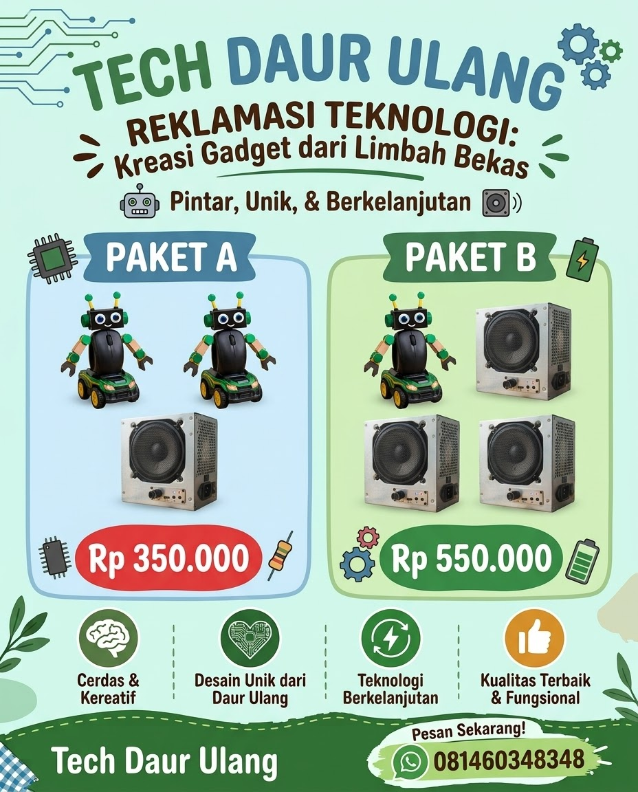

Lihat flyer penuh ↗
TECH DAUR ULANG
SPLDV: Robot dan Speaker Daur Ulang
Menentukan harga satu robot dan satu speaker dari dua paket menggunakan eliminasi dan substitusi.
Lihat Langkah Penyelesaian
1. Pemisalan Variabel
- x = harga 1 robot daur ulang
- y = harga 1 speaker daur ulang
2. Membuat Model Matematika
- Paket A: 2 robot + 1 speaker = Rp350.000
- Paket B: 1 robot + 3 speaker = Rp550.000
Maka diperoleh:
2x + y = 350.000 (1)
x + 3y = 550.000 (2)
3. Metode Campuran (Eliminasi dan Substitusi)
a. Eliminasi y untuk mencari x
Persamaan (1) × 3:
6x + 3y = 1.050.000
Persamaan (2) × 1:
x + 3y = 550.000
Kurangkan kedua persamaan:
5x = 500.000
x = 500.000 ÷ 5 = 100.000
b. Substitusi untuk mencari variabel lainnya
Gunakan persamaan (1):
2x + y = 350.000
2(100.000) + y = 350.000
200.000 + y = 350.000
y = 350.000 − 200.000
y = 150.000
4. Memeriksa Jawaban
Paket A: 2(100.000) + 150.000 = Rp350.000 ✓
Paket B: 100.000 + 3(150.000) = Rp550.000 ✓
5. Kesimpulan
Harga 1 robot adalah Rp100.000 dan harga 1 speaker adalah Rp150.000.